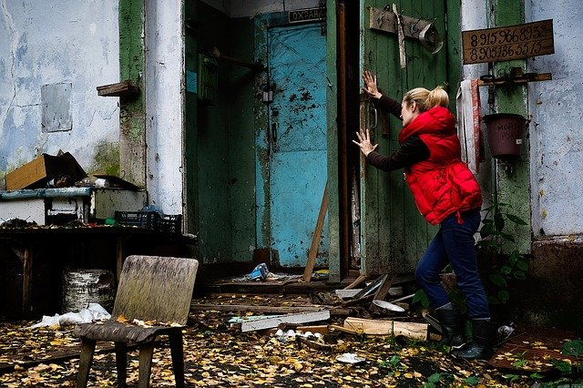

Pics from the movie crew
The crew was so committed that the plot remained the main theme even during breaks. The conversations stimulated new perspectives and camera work, which also found their way into the final film.


Hardy's godfather dies and leaves a small country house to him and his wife Claire. As soon as they have moved in, strange characters appear who are interested in the house and who absolutely want to buy it. When Hardy and Claire return from a weekend trip, they find a ravaged apartment. The neighbors warn them that there is a curse on the house. Hardy becomes suspicious. ...
Joe Walter as Hardy
Milly Fryday as Claire
Rod Snyder as neighbour Frayes
Bill McKeen as sergant Lockhead
Rex as family dog
Blue River Paper: "Best movie I have seen during the last 3 years. You should watch it!"
Evening Twitter: "A successful composition of tension, morality and romance. Highly Recommended."
Knockingham Courier: "Amazing. Impressive colors, actors and sounds. I really enjoyed it."
Richard Wood appeared on the set several times and was thrilled to see how convincingly his masterpiece was implemented in image and sound.
Back to front-pageThe crew was so committed that the plot remained the main theme even during breaks. The conversations stimulated new perspectives and camera work, which also found their way into the final film.